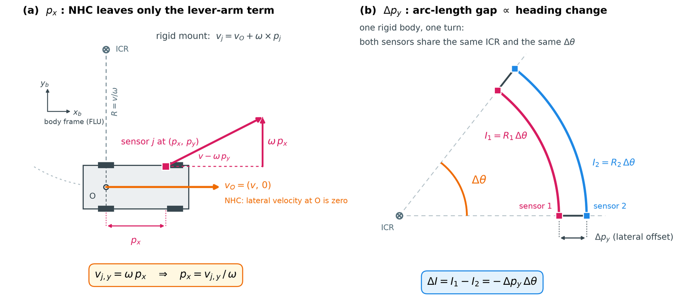

Observability decomposition
Six degrees of freedom, three fates. Four are recoverable by each sensor on its own, one needs two sensors to observe the same turn, and one is not observable from planar motion at all. Every design choice in NH-Calib follows from this table.
1 The decomposition
| Component | Observed from | Second sensor? | Timing dependence | Module |
|---|---|---|---|---|
| Roll φ | Direction of the sensor's own angular-velocity axis | No | None | A2 |
| Pitch θ | Same axis, second Euler component | No | None | A2 |
| Yaw ψ | Forward-velocity projection inside the joint yaw-and-X residual | No | None | A4 |
| X (px) | Lateral velocity induced by yaw rotation, vy = ωpx | No | None, when the sensor's own angular rate is used | A4 |
| Y (py) | Arc-length difference of two sensors over one turn | Yes | Confined to two window boundaries | B2, B3 |
| Z (pz) | Nothing — planar motion provides no vertical excitation | — | — | not estimated |
2 Why four components come free
Wheeled-vehicle motion supplies two constraints that a single sensor can exploit without any external reference.
- Planar motion. Within a segment the platform rotates about one axis. A sensor measuring its own angular velocity therefore measures the plane normal in its own frame, which fixes two rotational degrees of freedom — roll and pitch — up to a sign.
- The non-holonomic constraint. The rear-axle centre has no lateral velocity. Forward motion supplies the yaw lever, while turn rate makes the sensor's longitudinal lever arm appear as lateral velocity. Different curvatures separate yaw and X within the same residual.

3 Why Y is different
The lateral offset appears in the longitudinal velocity relation vj,x = vc,x − ωpy,j. Unlike the lateral equation, this one contains the platform's forward speed, and that speed is unknown and time-varying. A sensor cannot separate its own lateral offset from a speed it cannot measure independently.
Two sensors can, because the unknown speed is common to both and cancels in the difference. That is the entire reason Stage 2 exists, and the reason it is restricted to one component.
4 Why Z is absent
Vertical offset would need the platform to rotate about a horizontal axis, or to translate vertically in a way the sensors can observe. Locally planar driving supplies neither in sufficient magnitude, so no amount of data collection makes it observable.
That statement has been measured rather than only argued. Road-induced pitch transients — speed bumps, dips, expansion joints — are the natural candidate for vertical excitation, because pz enters the rigid-body relation only through the pitch channel, vj,x = vc,x + ωypz,j − ωzpy,j. Integrated over a window this gives Ix = Θy·Δpz − Θz·Δpy, so the entire lever for the vertical offset is the integrated pitch angle Θy = ∫ωydt.
Counting those transients in the Ford INS attitude at 200 Hz — peak rate at least 2°/s, duration between 0.2 and 0.6 s — finds plenty of them. The lever they carry is the problem, not their number.
| Drive | Pitch transients | Θy median [rad] | Aggregate lever vs five turns | Δpz MAE, oracle lever [mm] | Δpz MAE, sensor lever [mm] | Trivial Δpz=0 [mm] |
|---|---|---|---|---|---|---|
| Log 4 | 278 | 0.0092 | 0.193 | 330.0 | 605.0 | 90.0 |
| Log 5 | 374 | 0.0096 | 0.224 | 680.8 | 562.2 | 90.0 |
| Log 6 | 245 | 0.0096 | 0.182 | 273.4 | 447.3 | 90.0 |
5 Gauge freedoms
| Freedom | Status | How it is handled |
|---|---|---|
| Global rotation sign (one bit for the whole platform) | Not observable from planar motion | Declared: the reference sensor is defined to be upright — see A3 |
| Per-sensor relative sign bits (N − 1) | Observable | Measured by joint rotation averaging against a shared body angular velocity |
| Additive constant on all lateral offsets | Not observable from differences alone | Removed by fixing the reference node at yr = 0 in B3 |
| Vehicle-frame lateral origin | Observable only with an extra channel | Optional wheel-odometry virtual node at the rear-axle centre |
6 What the decomposition buys
- Sensors that share no field of view can still be calibrated against each other, because nothing is registered between them.
- Adding a sensor adds one node and its edges; the existing per-sensor estimates do not have to be redone.
- A channel whose odometry degrades affects its own estimates and its own edges; it does not corrupt the others through a shared trajectory constraint.
- Only one of the five reported components is exposed to inter-sensor clock error, and that exposure is further confined to two integration boundaries.
See also
- A2 · Motion-plane alignment — the planar-motion half of the argument
- A4 · X, Yaw and slip — the non-holonomic half
- B2 · Sum-form relative Y — the one component that needs association